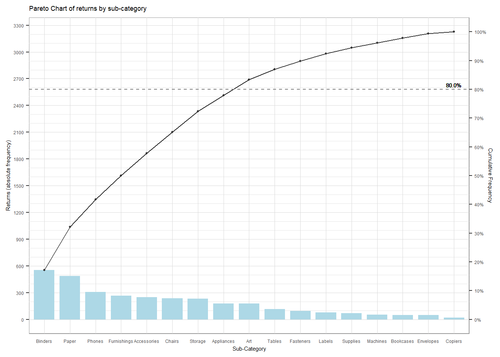
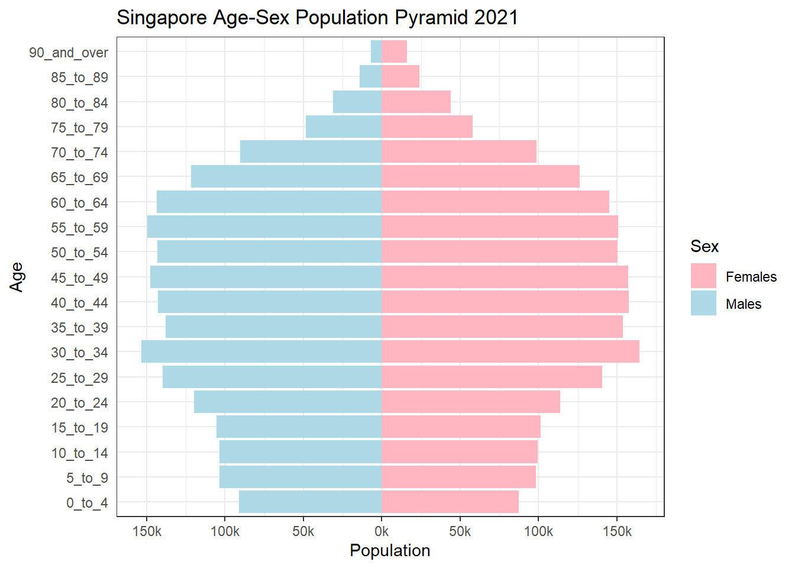

Show the code
pacman::p_load(tidyverse, readxl, knitr, plotly, skimr)December 28, 2022
In this take-home exercise, we will explore the pros and cons of creating data visualisations using ggplot2 and Tableau. The two data visualisations included in this exercise are:
A pareto chart showing the distribution of returns by a fictious superstore
A population pyramid of Singapore by age cohort and gender
The raw data had to be extensively transformed before it could be used for visualisation. It is challenging to ensure that the fields have been adequately transformed, and frequently results in recycle work where one has to modify data wrangling after doing the visualisation and repeating again. For example, the Age Group column for the population pyramid has a character data type, which means that when plotting or generating dataframes including this column, 0_to_4 would be parsed first, followed by 10_to_14, instead of the expected 5_to_9. The order in the visualisation would be incorrect based on this order. The issue was resolved by manually changing the order using mutate() and then sorting via arrange().
The secondary axes in ggplot2 is just based on a one-to-one transformation of the primary axes, hence the charts are still referenced to the primary axes. The challenge was resolved by transforming the secondary axis by a coefficient, such that the scale matches the primary axis.
As ggplot2 produces static charts, bringing in interactivity in the visualizations may be a challenge. This was resolved by using plotly package, which can be quickly transformed for the Age-Sex Population Pyramid. The pareto chart, which contained a secondary axis, required to be plotted using plotly tools.
The default visualization created with ggplot2 is not appealing and not professional looking. The default grey background was difficult to view for some charts and some of the default themes are not easy on the eyes. Hence, some charts may need to be extensively customized. For instance, the grid lines, axis labels, colour scheme of the pareto chart had to be customised.
In R, data preparation for different charts using different data sets can be done on one platform using the same environment. Tableau, on the other hand requires separate workbook for separate data sets. . On the other hand, web scraping cannot be performed on Tableau. Both pareto chart and population pyramid can be plotted in the same environment in R, whereas requires 2 workbooks in Tableau.
Tableau is more user friendly and fool-proof in creating visualisations. However, R has a rich repository of packages that directly creates different chart types, whereas Tableau requires some manipulation of base chart types. For example, though not carried out in this exercise, a basic pareto plot can be created by stat_pareto() of ggQC, and a basic population pyramid can be plotted using nPyramid() of rCharts.
Visualisations in Tableau are interactive, whereas ggplot2 in R is static. Extra effort is also required to customise the details of the visualisation in ggplot2. Interactivity and customisation can be included through ggplot and plotly. Once a chart is created, the same visualisation using different variables or level of details can be easily re-created using similar lines of code.
Reference charts were already created using Tableau for in-class exercise 2, hence they will be used as the proposed sketch for the data visualisations for ggplot2.
As Tableau produces interactive charts and dashboards, we will use plotly to convert the ggplot2 plots to produce interactive graphs for a more objective comparison.
The following are the packages required for this exercise :
Usage of the code chunk below :
p_load( ) - pacman - to load packages into R environment. This function will attempt to install the package from CRAN or pacman repository list if it is not installed.
Remarks :
sf, tidyverse, questionr, janitor, psych, ggplot2, gcookbook, tmap, ggpubr, egg, corrplot, gtsummary, regclass, caret, heatmaply, ggdendro, cluster, factoextra, spdep, ClustGeo, GGally, skimr, stringr, funModeling, knitr, caTools, viridis, rgeoda, cowplot, patchwork.
Alternate code chunk -
Tableau Fictatious Dataset
Singstat Dataset for Population
Two (2) steps : import and inspect imported data set.
Usage of the code chunk below :
read_xls( ) - readxl - to read excel into a tibble.
rename( ) - dplyr - to remove “#” from the variables.
problems( ) - readr - to reveal any parsing errors when importing the CSV file.
| Name | orders |
| Number of rows | 9994 |
| Number of columns | 21 |
| _______________________ | |
| Column type frequency: | |
| character | 13 |
| numeric | 6 |
| POSIXct | 2 |
| ________________________ | |
| Group variables | None |
Variable type: character
| skim_variable | n_missing | complete_rate | min | max | empty | n_unique | whitespace |
|---|---|---|---|---|---|---|---|
| Order ID | 0 | 1 | 14 | 14 | 0 | 5009 | 0 |
| Ship Mode | 0 | 1 | 8 | 14 | 0 | 4 | 0 |
| Customer ID | 0 | 1 | 8 | 8 | 0 | 793 | 0 |
| Customer Name | 0 | 1 | 7 | 22 | 0 | 793 | 0 |
| Segment | 0 | 1 | 8 | 11 | 0 | 3 | 0 |
| Country/Region | 0 | 1 | 13 | 13 | 0 | 1 | 0 |
| City | 0 | 1 | 4 | 17 | 0 | 531 | 0 |
| State | 0 | 1 | 4 | 20 | 0 | 49 | 0 |
| Region | 0 | 1 | 4 | 7 | 0 | 4 | 0 |
| Product ID | 0 | 1 | 15 | 15 | 0 | 1862 | 0 |
| Category | 0 | 1 | 9 | 15 | 0 | 3 | 0 |
| Sub-Category | 0 | 1 | 3 | 11 | 0 | 17 | 0 |
| Product Name | 0 | 1 | 5 | 127 | 0 | 1849 | 0 |
Variable type: numeric
| skim_variable | n_missing | complete_rate | mean | sd | p0 | p25 | p50 | p75 | p100 | hist |
|---|---|---|---|---|---|---|---|---|---|---|
| Row ID | 0 | 1 | 4997.50 | 2885.16 | 1.00 | 2499.25 | 4997.50 | 7495.75 | 9994.00 | ▇▇▇▇▇ |
| Postal Code | 11 | 1 | 55245.23 | 32038.72 | 1040.00 | 23223.00 | 57103.00 | 90008.00 | 99301.00 | ▆▃▃▅▇ |
| Sales | 0 | 1 | 229.86 | 623.25 | 0.44 | 17.28 | 54.49 | 209.94 | 22638.48 | ▇▁▁▁▁ |
| Quantity | 0 | 1 | 3.79 | 2.23 | 1.00 | 2.00 | 3.00 | 5.00 | 14.00 | ▇▅▁▁▁ |
| Discount | 0 | 1 | 0.16 | 0.21 | 0.00 | 0.00 | 0.20 | 0.20 | 0.80 | ▇▆▁▁▁ |
| Profit | 0 | 1 | 28.66 | 234.26 | -6599.98 | 1.73 | 8.67 | 29.36 | 8399.98 | ▁▁▇▁▁ |
Variable type: POSIXct
| skim_variable | n_missing | complete_rate | min | max | median | n_unique |
|---|---|---|---|---|---|---|
| Order Date | 0 | 1 | 2017-01-03 | 2020-12-30 | 2019-06-26 | 1236 |
| Ship Date | 0 | 1 | 2017-01-07 | 2021-01-05 | 2019-06-29 | 1334 |
| Name | returns |
| Number of rows | 800 |
| Number of columns | 2 |
| _______________________ | |
| Column type frequency: | |
| character | 2 |
| ________________________ | |
| Group variables | None |
Variable type: character
| skim_variable | n_missing | complete_rate | min | max | empty | n_unique | whitespace |
|---|---|---|---|---|---|---|---|
| Returned | 0 | 1 | 3 | 3 | 0 | 1 | 0 |
| Order ID | 0 | 1 | 14 | 14 | 0 | 296 | 0 |
Pareto charts show the ordered frequency counts of data. They show the ordered frequency counts of values for the different levels of a categorical or nominal variable. These charts are often used to identify areas to focus on first in process improvement, as supported by the Pareto Principle (80/20 Rule).
To combine the separate data frames, the left_join() of dplyr is used to join the returns data frame and orders data frame by using Order ID as the unique identifier.
# A tibble: 6 × 22
Returned `Order ID` Row I…¹ `Order Date` `Ship Date` Ship …²
<chr> <chr> <dbl> <dttm> <dttm> <chr>
1 Yes CA-2017-1007… 6315 2017-11-24 00:00:00 2017-11-29 00:00:00 Standa…
2 Yes CA-2017-1007… 6316 2017-11-24 00:00:00 2017-11-29 00:00:00 Standa…
3 Yes CA-2017-1007… 6317 2017-11-24 00:00:00 2017-11-29 00:00:00 Standa…
4 Yes CA-2017-1007… 6318 2017-11-24 00:00:00 2017-11-29 00:00:00 Standa…
5 Yes CA-2017-1007… 6315 2017-11-24 00:00:00 2017-11-29 00:00:00 Standa…
6 Yes CA-2017-1007… 6316 2017-11-24 00:00:00 2017-11-29 00:00:00 Standa…
# … with 16 more variables: `Customer ID` <chr>, `Customer Name` <chr>,
# Segment <chr>, `Country/Region` <chr>, City <chr>, State <chr>,
# `Postal Code` <dbl>, Region <chr>, `Product ID` <chr>, Category <chr>,
# `Sub-Category` <chr>, `Product Name` <chr>, Sales <dbl>, Quantity <dbl>,
# Discount <dbl>, Profit <dbl>, and abbreviated variable names ¹`Row ID`,
# ²`Ship Mode`To achieve the frequency count of returns by sub-category, group_by() of dplyr package is used to group the orders by Sub-Category. Then, summarise() of dplyr is used to count (i.e. n()) the number of returned orders.
By default, the values of the tibble data frame is sorted according to the values of the first column. In this case, the values are sorted alphabetically by Sub-Category field.
We will need to sort the sub-category field by descending order of values in the Returns field. To accomplish this task, the arrange() of dplyr package is used as shown in the code chunk below.
Lastly, we can compute the cumulative frequency of returns by product sub-category. This task will be performed by using mutate() of dplyr package and cumsum() of Base R.
The newly computed cumulative frequency values will be stored in a new field called cumfreq.
# A tibble: 6 × 4
`Sub-Category` Returns cumfreq cum
<chr> <int> <int> <dbl>
1 Binders 552 552 0.171
2 Paper 487 1039 0.322
3 Phones 309 1348 0.418
4 Furnishings 266 1614 0.500
5 Accessories 251 1865 0.578
6 Chairs 238 2103 0.652A pareto chart was plotted using ggplot2 as follows:
geom_col() instead of geom_bar() was used to create the bar chart as we do not need to modify the data, and want the height of the bar to represent the actual counts of returns.
geom_line() and geom_point() was used for the line and scatter plot for the cumulative frequency of return counts. The scatter plot helps reader to identify the corresponding cumulative frequency for each product in a static chart.
scale_y_continuous() was used to adjust the interval between the grid lines and add a secondary y axes for the cumulative percentage of returns for each product. The secondary y axes is just based on a one-to-one transformation of the primary axes, hence both bar and line charts are still plotted with reference to the primary axes.
theme() was lastly used to adjust the background color and grid lines of the plot to improve visibility to readers.
pa <- ggplot(data = freq_cum,
aes(x = reorder(`Sub-Category`,-`Returns`))) +
geom_col(aes(y=`Returns`), fill = 'lightblue', width= 0.8) +
geom_point(aes(y=`cumfreq`), color = 'grey20', size = 0.8) +
geom_line(aes(y =`cumfreq`, group = 1), colour = 'grey20', size = 0.4) +
labs(x = "Sub-Category", title = "Pareto Chart of returns by sub-category") +
scale_y_continuous(
name = 'Returns (absolute frequency)', breaks = seq(0, 3500, 300), minor_breaks = seq(0, 3500, 100),
sec.axis = sec_axis(~.*1/sum(freq_cum$Returns), name = 'Cumulative Frequency', breaks = seq(0, 1, by = 0.1), labels = scales::percent)
) +
geom_hline(yintercept=0.8*sum(freq_cum$Returns), linetype="dashed", color = "grey50") +
geom_text(aes(17, 0.8*sum(freq_cum$Returns), label = "80.0%", vjust = -0.5), size = 2) +
theme(panel.background = element_rect(fill = 'white', colour = 'grey60', size = 0.5, linetype = 'solid'),
panel.grid.major = element_line(size = 0.3, linetype = 'solid', colour = 'grey85'),
panel.grid.minor = element_line(size = 0.2, linetype = 'solid', colour = 'grey90'),
text = element_text(size = 5.5),
axis.ticks.x = element_blank()) Warning: Using `size` aesthetic for lines was deprecated in ggplot2 3.4.0.
ℹ Please use `linewidth` instead.Warning: The `size` argument of `element_rect()` is deprecated as of ggplot2 3.4.0.
ℹ Please use the `linewidth` argument instead.Warning: The `size` argument of `element_line()` is deprecated as of ggplot2 3.4.0.
ℹ Please use the `linewidth` argument instead.Warning: Use of `freq_cum$Returns` is discouraged.
ℹ Use `Returns` instead.
From the previous chart plotted using ggplot2, the secondary y axes was based on a one-to-one transformation of the primary y axes. The bar and line charts were plotted with reference to the primary y axes, hence the secondary y axes will not be transferred to the interactive chart using ggplotly() of plotly library.
Therefore, an interactive pareto chart was plotted using plot_ly() from plotly. A scatter plot was not included in this case as one can simply hover across the line to view the corresponding cumulative percentage for each product. Similarly, hovering on the bars will reveal the absolute frequency of returns for each product sub-category.
plot_ly(freq_cum, x = ~reorder(`Sub-Category`,-`Returns`), y = ~`Returns`, type = "bar", name = "Returns") %>%
add_trace(x = ~reorder(`Sub-Category`,-`Returns`), y = ~`cum`*100,type = "scatter", mode = "lines", yaxis = "y2", name = "Cum. %") %>%
layout(title = "Pareto chart of returns by sub-category",
xaxis = list(title = "Sub-Category"),
yaxis = list(title = "Returns (Absolute Frequency)", showgrid = F),
yaxis2 = list(overlaying = "y", side = "right", title = "Cumulative Percentage (%)", range = list(0, 100)),
legend = list(orientation="h", yanchor="bottom",y=0.9,xanchor="top",x=0.2)) From the pareto chart, we can tell that 8 sub-categories account for 80% of the returned products. The sub-categories are Binders, Paper, Phones, Furnishings, Accessories, Chairs, Storage, Appliances and Art. As these are about 50% of the product sub-categories, the distribution of returns across can be considered relatively even. The store owners can still use the chart to focus on products with high returns such as Binders and Paper.
A population pyramid depicts the distribution of a population by age groups and sex. The pyramid can be used to visualize the age of a particular population. It is also used determine the overall age distribution of a population and an indication of the reproductive capabilities and likelihood of the continuation of a species.
For this task, the data entitled Singapore Residents by Planning Area / Subzone, Age Group, Sex and Type of Dwelling, June 2021 should is used. The data set is available at Department of Statistics home page.
Data import was accomplished using read_csv() of readr package, which is useful for reading delimited files into a tibble.
Rows: 75696 Columns: 7
── Column specification ────────────────────────────────────────────────────────
Delimiter: ","
chr (5): PA, SZ, AG, Sex, FA
dbl (2): Pop, Time
ℹ Use `spec()` to retrieve the full column specification for this data.
ℹ Specify the column types or set `show_col_types = FALSE` to quiet this message.# A tibble: 6 × 7
PA SZ AG Sex FA Pop Time
<chr> <chr> <chr> <chr> <chr> <dbl> <dbl>
1 Ang Mo Kio Ang Mo Kio Town Centre 0_to_4 Males <= 60 0 2022
2 Ang Mo Kio Ang Mo Kio Town Centre 0_to_4 Males >60 to 80 10 2022
3 Ang Mo Kio Ang Mo Kio Town Centre 0_to_4 Males >80 to 100 20 2022
4 Ang Mo Kio Ang Mo Kio Town Centre 0_to_4 Males >100 to 120 60 2022
5 Ang Mo Kio Ang Mo Kio Town Centre 0_to_4 Males >120 10 2022
6 Ang Mo Kio Ang Mo Kio Town Centre 0_to_4 Males Not Available 0 2022First, we are going to compute the frequency count of the total population in Singapore by gender and age. In the code chunk below, group_by() of dplyr package is used to group the orders by age and gender. Then, summarise() of dplyr is used to count (i.e. n()) the number of residents.
`summarise()` has grouped output by 'AG'. You can override using the `.groups`
argument.# A tibble: 6 × 3
AG Sex Count
<chr> <chr> <dbl>
1 0_to_4 Females 87370
2 0_to_4 Males 91170
3 10_to_14 Females 99450
4 10_to_14 Males 103350
5 15_to_19 Females 101340
6 15_to_19 Males 105580By default, the values of the tibble data frame is sorted according to the values of the first column. In this case, the values are sorted alphanumerically by the age group.
Hence, we will sort the data based on the categorical age-group assigned in the original dataset. This task is first performed by changing the order using mutate() and then sorting via arrange() of dplyr package.
order <- c("0_to_4", "5_to_9", "10_to_14", "15_to_19", "20_to_24", "25_to_29", "30_to_34", "35_to_39", "40_to_44", "45_to_49", "50_to_54", "55_to_59", "60_to_64", "65_to_69", "70_to_74", "75_to_79", "80_to_84", "85_to_89", "90_and_over")
sorted_pop <- freq_pop %>%
mutate(AG = factor(AG, levels = order)) %>%
arrange(AG)
head(sorted_pop)# A tibble: 6 × 3
AG Sex Count
<fct> <chr> <dbl>
1 0_to_4 Females 87370
2 0_to_4 Males 91170
3 5_to_9 Females 98430
4 5_to_9 Males 103530
5 10_to_14 Females 99450
6 10_to_14 Males 103350A Age-Sex Population Pyramid was plotted using ggplot2 as follows:
geom_col() instead of geom_bar() was used to create the bar chart as we do not need to modify the data, and want the length of the bar to represent the actual population stats.
ifelse() of Base R function was convert population count of Male residents to be negative, so that their data will be plotted on the left side of the pyramid.
scale_x_continuous() was used to modify the labels on the x-axis to provide better readability.
p <- ggplot(sorted_pop, aes(x = ifelse(Sex == "Males", yes = -Count, no = Count),
y = AG, fill = Sex)) +
geom_col() +
scale_x_continuous(breaks = seq(-150000, 150000, 50000),
labels = paste0(as.character(c(seq(150, 0, -50), seq(50, 150, 50))),"k")) +
labs (x = "Population", y = "Age", title='Singapore Age-Sex Population Pyramid 2021') +
theme_bw() +
theme(axis.ticks.y = element_blank()) +
scale_fill_manual(values = c("Males" = "lightblue", "Females" = "lightpink"))
p
The static pyramid was converted to an interactive chart by using ggplotly() of the plotly library. By hovering your mouse on the bars, you can view the population stats for each age group and gender.
From the plot, we can tell that Singapore has a constrictive population because there is a lower percentage of younger people. This indicates declining birth rates in Singapore, since each succeeding age group is getting smaller and smaller. It may also represent a higher life expectancy for the older population. As Singapore enters into a silver economy, government bodies can use such data to put fourth appropriate measures and policies to manage its ageing population in the future.